library(terra)
landscape_sempach <- rast("data/landcover_4.tif")
df_levels <- data.frame(id = 1:4, cover = c("settlement", "agriculture", "forest", "unproductive"))
levels(landscape_sempach) <- df_levels3 Landscape metrics
3.1 Introduction
We first need to load the landscapemetrics package. This is the package we are going to use to compute landscape indices. Since the standard output of landscapemetrics is a tibble, we are also loading the dplyr package. This is not strictly needed since tibbles are also data frames, but the display will be a bit nicer.
library(landscapemetrics)
library(dplyr)Since the computation time of some indices can be quite high on large landscapes, we are going to use a small simulated landscape provided by the package authors. It’s a 30x30 square landscape with 3 land cover categories.
landscape <- rast(landscape)
plot(landscape)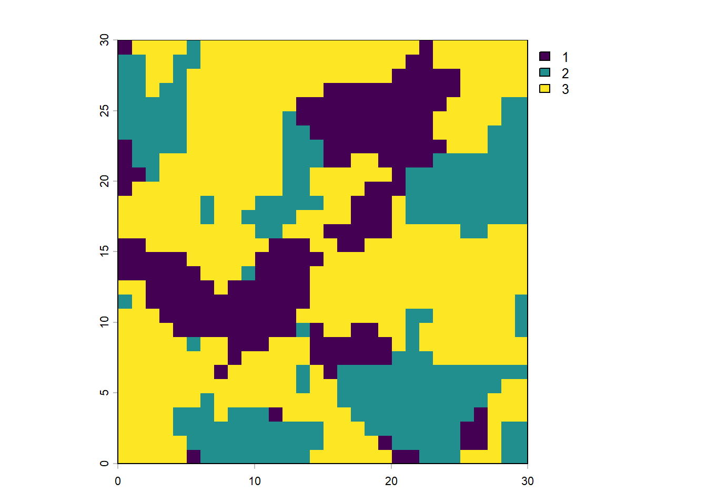
Before computing metrics, we first need to check that our input raster data is fulfilling all the requirements of landscapemetrics:
- The input raster is categorical (with a reasonable amount of categories)
- Categories are encoded using integer values
- The landscape uses a projected coordinate reference system (CRS)
- The CRS uses meters as a distance unit
We thus check our simulated landscape. As a comparison, we also check the landscape we were using in the previous sections.
check_landscape(landscape)Warning: Caution: Coordinate reference system not metric - Units of results
based on cellsizes and/or distances may be incorrect. layer crs units class n_classes OK
1 1 NA NA integer 3 ❓check_landscape(landscape_sempach) layer crs units class n_classes OK
1 1 projected m integer 4 ✔We get a warning for the simulated data set since the CRS is not defined and landscapemetrics cannot know if the data is projected and/or using meters as a distance unit. To remove the warning, we will assign a projected CRS (we’ll use the one used in Switzerland) to the raster. This is not a problem here since we don’t care about the true location of this raster. However, in a real analysis, you should always check that your data has the appropriate CRS.
crs(landscape) <- "EPSG:2056"
check_landscape(landscape) layer crs units class n_classes OK
1 1 projected m integer 3 ✔You can use the list_lsm() function to get a list of all the metrics provided by landscapemetrics. Using the level and type arguments, it is also possible to get only the metrics for a specific level (patch, class or landscape) or a specific type of metrics.
list_lsm()# A tibble: 133 × 5
metric name type level function_name
<chr> <chr> <chr> <chr> <chr>
1 area patch area area and edge… patch lsm_p_area
2 cai core area index core area met… patch lsm_p_cai
3 circle related circumscribing circle shape metric patch lsm_p_circle
4 contig contiguity index shape metric patch lsm_p_contig
5 core core area core area met… patch lsm_p_core
6 enn euclidean nearest neighbor distance aggregation m… patch lsm_p_enn
7 frac fractal dimension index shape metric patch lsm_p_frac
8 gyrate radius of gyration area and edge… patch lsm_p_gyrate
9 ncore number of core areas core area met… patch lsm_p_ncore
10 para perimeter-area ratio shape metric patch lsm_p_para
# ℹ 123 more rowslist_lsm(level = "class", type = "shape metric")# A tibble: 16 × 5
metric name type level function_name
<chr> <chr> <chr> <chr> <chr>
1 circle_cv related circumscribing circle shape metric class lsm_c_circle_cv
2 circle_mn related circumscribing circle shape metric class lsm_c_circle_mn
3 circle_sd related circumscribing circle shape metric class lsm_c_circle_sd
4 contig_cv contiguity index shape metric class lsm_c_contig_cv
5 contig_mn contiguity index shape metric class lsm_c_contig_mn
6 contig_sd contiguity index shape metric class lsm_c_contig_sd
7 frac_cv fractal dimension index shape metric class lsm_c_frac_cv
8 frac_mn fractal dimension index shape metric class lsm_c_frac_mn
9 frac_sd fractal dimension index shape metric class lsm_c_frac_sd
10 pafrac perimeter-area fractal dimension shape metric class lsm_c_pafrac
11 para_cv perimeter-area ratio shape metric class lsm_c_para_cv
12 para_mn perimeter-area ratio shape metric class lsm_c_para_mn
13 para_sd perimeter-area ratio shape metric class lsm_c_para_sd
14 shape_cv shape index shape metric class lsm_c_shape_cv
15 shape_mn shape index shape metric class lsm_c_shape_mn
16 shape_sd shape index shape metric class lsm_c_shape_sd The last column shows name of the function used to compute the metrics. You can access the documentation of every metric with the help() (or ?) function.
help(lsm_p_area)
?lsm_p_area3.2 Patch metrics
A patch is an area of continuous land cover, and this continuity is defined by the numbers of connected neighbors. Most (maybe even all, I didn’t check) functions of landscapmetrics use 8 neighbors (queen’s case) but you can choose to use only 4 neighbors (rook’s case). This can have a strong influence on the number of delineated patches. The show_patches() function allows us to visualize the patches. Let’s use it with the 2 different settings.
show_patches(landscape, directions = 4, labels = TRUE)$layer_1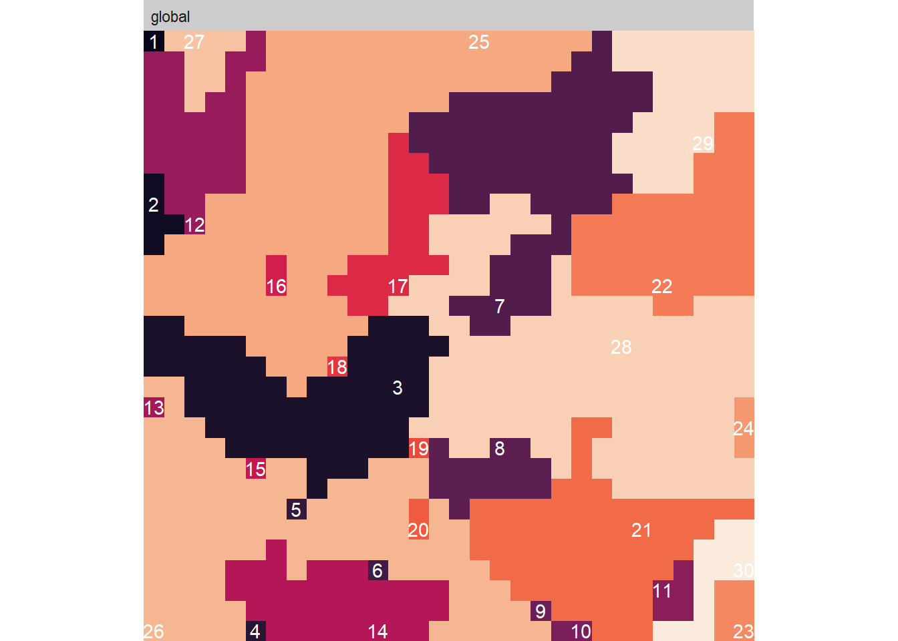
show_patches(landscape, directions = 8, labels = TRUE)$layer_1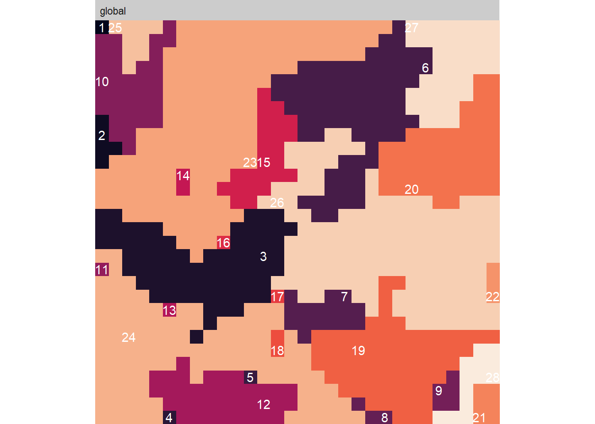
When you compute a patch metric, you’ll get a value for every patch. This can be quite slow for large landscapes. As an example, let’s compute the area of each patch. This is done with the lsm_p_area() function.
res <- lsm_p_area(landscape)
res# A tibble: 28 × 6
layer level class id metric value
<int> <chr> <int> <int> <chr> <dbl>
1 1 patch 1 1 area 0.0001
2 1 patch 1 2 area 0.0005
3 1 patch 1 3 area 0.0072
4 1 patch 1 4 area 0.0001
5 1 patch 1 5 area 0.0001
6 1 patch 1 6 area 0.008
7 1 patch 1 7 area 0.0016
8 1 patch 1 8 area 0.0003
9 1 patch 1 9 area 0.0005
10 1 patch 2 10 area 0.0034
# ℹ 18 more rowsWe get all the areas in hectares (check the help file if you want to know the units) and the output is stored in a tibble. We can thus use the usual data frame techniques to extract values, for example to get the IDs of all the patches with an area bigger than 0.005 ha.
res[res$class == 2 & res$value > 0.005, "id"]# A tibble: 2 × 1
id
<int>
1 19
2 20Some species don’t really like edge effects and thus avoid staying close to edges of a patch. In this case, the area of the patch is maybe not the best metric to use. Fortunately, there’s another metric that computes the core area of each patch.
res <- lsm_p_cai(landscape)
res# A tibble: 28 × 6
layer level class id metric value
<int> <chr> <int> <int> <chr> <dbl>
1 1 patch 1 1 cai 0
2 1 patch 1 2 cai 0
3 1 patch 1 3 cai 48.6
4 1 patch 1 4 cai 0
5 1 patch 1 5 cai 0
6 1 patch 1 6 cai 47.5
7 1 patch 1 7 cai 18.7
8 1 patch 1 8 cai 0
9 1 patch 1 9 cai 0
10 1 patch 2 10 cai 26.5
# ℹ 18 more rowsLet’s visualize the core areas of the patches for all three classes separately using the show_cores() function.
show_cores(landscape, class = "all")$layer_1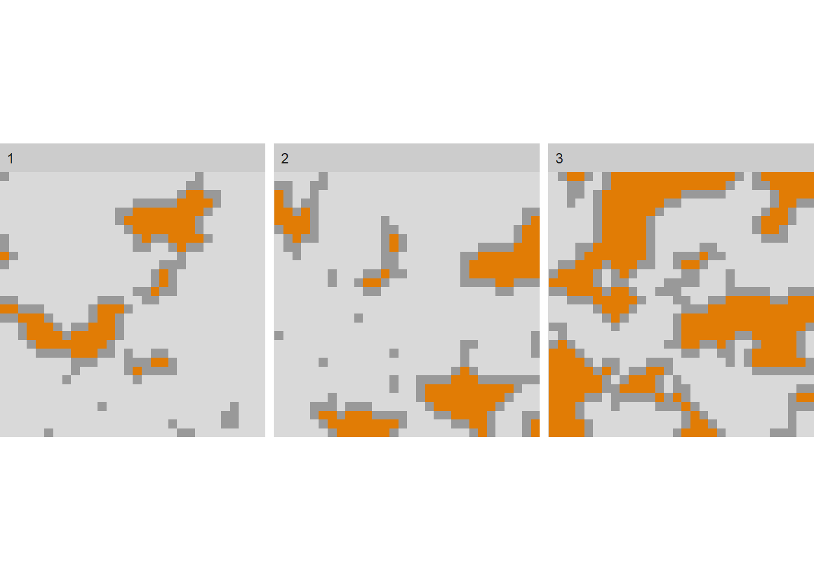
Some functions, like lsm_p_cai() have additional arguments. For the core area index, we can specify the width of the edge using the edge_depth argument. The distance is specified in cell numbers.
res <- lsm_p_cai(landscape, edge_depth = 2)
res# A tibble: 28 × 6
layer level class id metric value
<int> <chr> <int> <int> <chr> <dbl>
1 1 patch 1 1 cai 0
2 1 patch 1 2 cai 0
3 1 patch 1 3 cai 12.5
4 1 patch 1 4 cai 0
5 1 patch 1 5 cai 0
6 1 patch 1 6 cai 17.5
7 1 patch 1 7 cai 0
8 1 patch 1 8 cai 0
9 1 patch 1 9 cai 0
10 1 patch 2 10 cai 2.94
# ℹ 18 more rowsshow_cores(landscape, class = "all", edge_depth = 2)$layer_1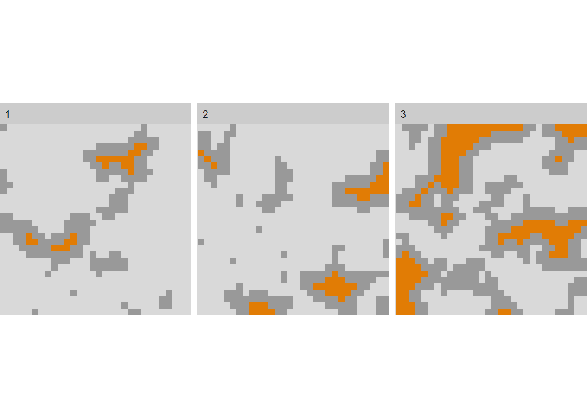
It is sometimes useful to show the values of the patch metrics on a map. This can also help to understand the results of more complex metrics. The show_lsm() function creates such a map in which the value of each pixel is equal to the associated patch metric.
show_lsm(landscape, what = "lsm_p_area")$layer_1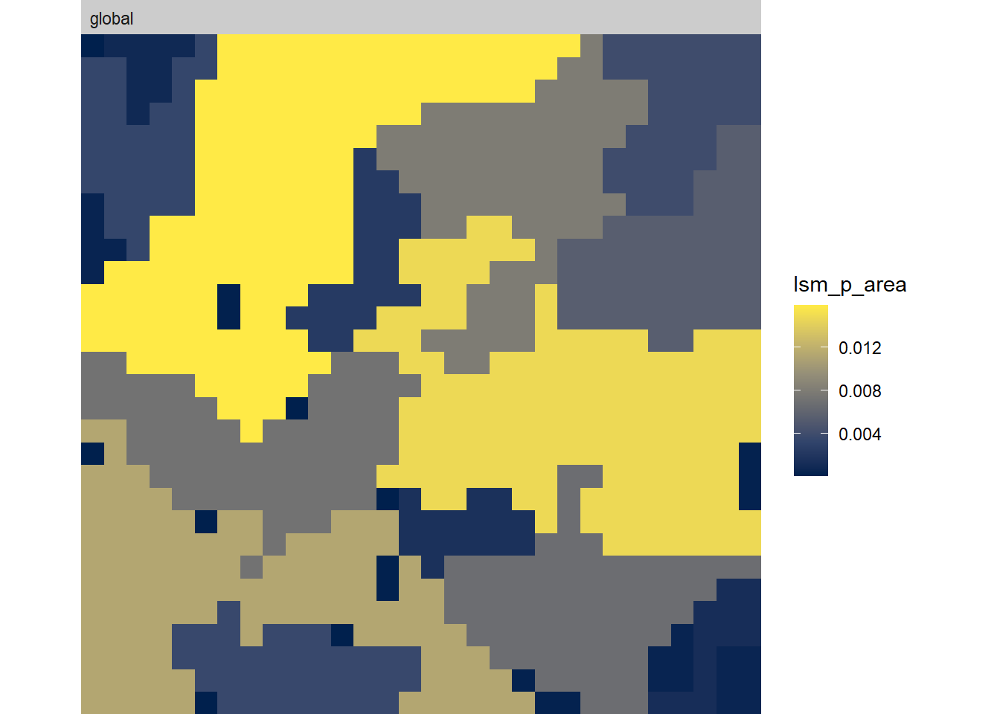
It is also possible to save this map as a SpatRaster object using the spatialize_lsm() function. The raster will be stored in a nested list. Only patch metrics are allowed.
res <- spatialize_lsm(landscape, what = "lsm_p_area")
res[[1]][[1]]class : SpatRaster
size : 30, 30, 1 (nrow, ncol, nlyr)
resolution : 1, 1 (x, y)
extent : 0, 30, 0, 30 (xmin, xmax, ymin, ymax)
coord. ref. : CH1903+ / LV95 (EPSG:2056)
source(s) : memory
name : value
min value : 0.0001
max value : 0.01593.3 Class metrics
3.4 Landscape metrics
3.5 Computing several indices
# Several metrics at the same time
calculate_lsm(landscape, what = c("lsm_c_pland", "lsm_l_ta", "lsm_l_te"), full_name = TRUE)# A tibble: 5 × 9
layer level class id metric value name type function_name
<int> <chr> <int> <int> <chr> <dbl> <chr> <chr> <chr>
1 1 class 1 NA pland 20.4 percentage of l… area… lsm_c_pland
2 1 class 2 NA pland 26 percentage of l… area… lsm_c_pland
3 1 class 3 NA pland 53.6 percentage of l… area… lsm_c_pland
4 1 landscape NA NA ta 0.09 total area area… lsm_l_ta
5 1 landscape NA NA te 340 total edge area… lsm_l_te calculate_lsm(landscape, type = "aggregation metric", level = c("patch", "landscape"), full_name = TRUE)# A tibble: 42 × 9
layer level class id metric value name type function_name
<int> <chr> <int> <int> <chr> <dbl> <chr> <chr> <chr>
1 1 landscape NA NA ai 82.5 aggregatio… aggr… lsm_l_ai
2 1 landscape NA NA cohesion 90.6 patch cohe… aggr… lsm_l_cohesi…
3 1 landscape NA NA contag 26.3 connectance aggr… lsm_l_contag
4 1 landscape NA NA division 0.896 division i… aggr… lsm_l_divisi…
5 1 landscape NA NA enn_cv 42.8 euclidean … aggr… lsm_l_enn_cv
6 1 landscape NA NA enn_mn 3.42 euclidean … aggr… lsm_l_enn_mn
7 1 landscape NA NA enn_sd 1.46 euclidean … aggr… lsm_l_enn_sd
8 1 landscape NA NA iji 89.8 interspers… aggr… lsm_l_iji
9 1 landscape NA NA lsi 3.83 landscape … aggr… lsm_l_lsi
10 1 landscape NA NA mesh 0.00938 effective … aggr… lsm_l_mesh
# ℹ 32 more rowsmetrics <- calculate_lsm(landscape_sempach, what = c("lsm_c_cai_mn", "lsm_c_area_mn", "lsm_c_pland", "lsm_c_ed"))
calculate_correlation(metrics, diag = FALSE)$class
# A tibble: 6 × 3
metric_1 metric_2 value
<chr> <chr> <dbl>
1 cai_mn area_mn -0.136
2 ed area_mn 0.773
3 pland area_mn 0.982
4 ed cai_mn -0.134
5 pland cai_mn -0.109
6 pland ed 0.878show_correlation(metrics) # common to remove stuff with correlation 0.7 or higher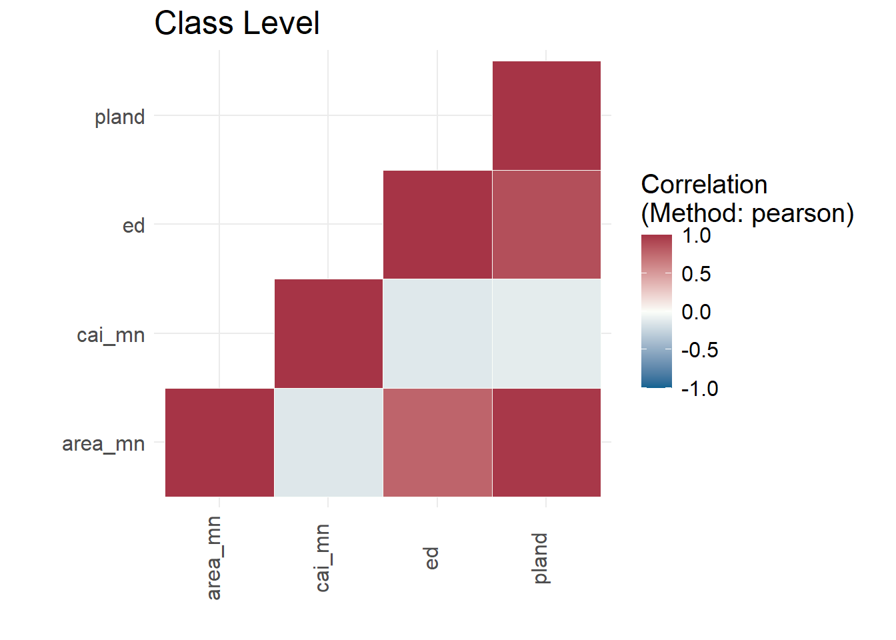
3.6 Extracting and sampling indices
# Extract (only for patch metrics)
pts <- matrix(c(10, 22, 22, 5, 26, 20), ncol = 2, byrow = TRUE)
pts <- vect(pts, crs = "EPSG:2056")
plot(landscape)
plot(pts, col = "red", cex = 2, add = TRUE)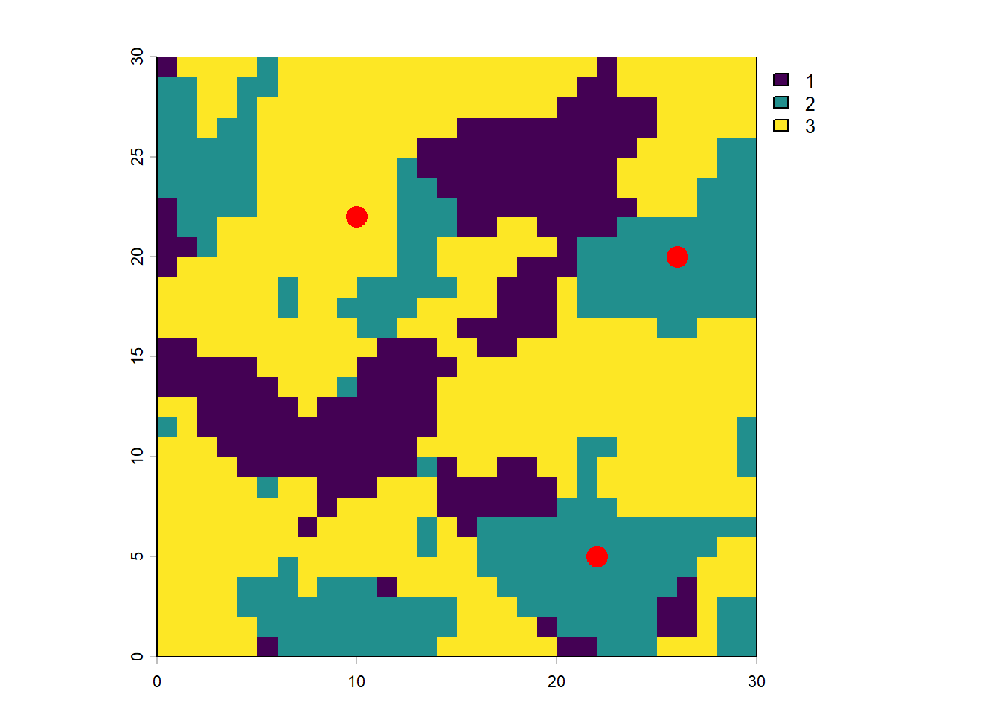
extract_lsm(landscape, y = pts, what = "lsm_p_area")# A tibble: 3 × 7
layer level class id metric value extract_id
<int> <chr> <int> <int> <chr> <dbl> <int>
1 1 patch 3 23 area 0.0159 1
2 1 patch 2 19 area 0.0068 2
3 1 patch 2 20 area 0.0055 3# Sample landscape metrics (y can be polygons, too)
sample_lsm(landscape, y = pts, size = 10, shape = "circle", what = c("lsm_l_msidi", "lsm_l_pr", "lsm_l_shei"))Warning: The 'perecentage_inside' is below 90% for at least one buffer.# A tibble: 9 × 8
layer level class id metric value plot_id percentage_inside
<int> <chr> <int> <int> <chr> <dbl> <int> <dbl>
1 1 landscape NA NA msidi 0.851 1 106.
2 1 landscape NA NA pr 3 1 106.
3 1 landscape NA NA shei 0.880 1 106.
4 1 landscape NA NA msidi 0.832 2 82.8
5 1 landscape NA NA pr 3 2 82.8
6 1 landscape NA NA shei 0.843 2 82.8
7 1 landscape NA NA msidi 0.969 3 83.1
8 1 landscape NA NA pr 3 3 83.1
9 1 landscape NA NA shei 0.941 3 83.1# hide code
plot(landscape, ext = ext(landscape) + 6, box = FALSE, axes = FALSE, legend = FALSE)
plot(buffer(pts, width = 10), cex = 3, border = "red", add = TRUE)
plot(pts, col = "red", cex = 2, add = TRUE)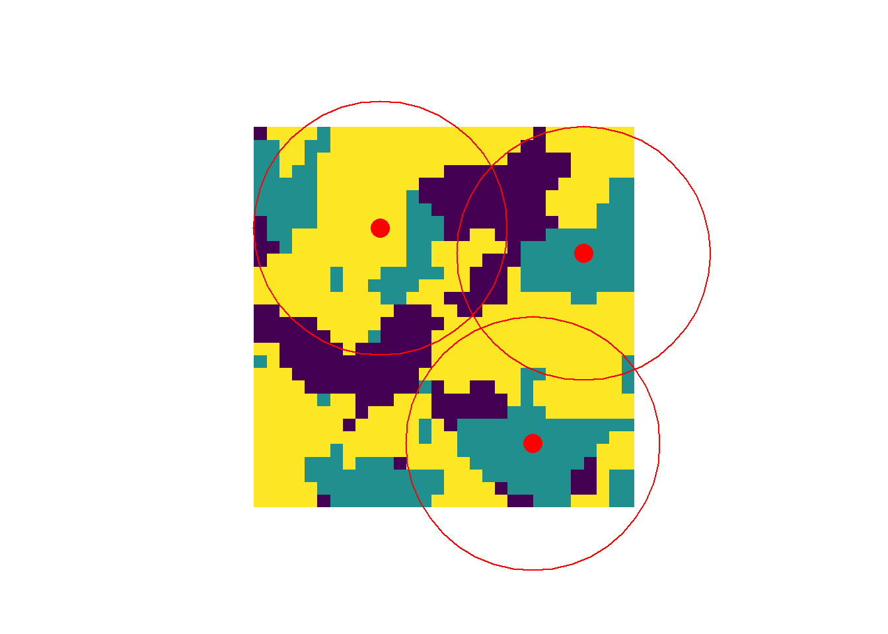
# Sample in several buffers
# creating buffers of 5 and 10 meters
sizes = c(5, 10)
# calculating landscape metric for square buffers
library(purrr)
sizes |>
set_names() |>
map_dfr(~ sample_lsm(landscape, y = pts, what = "lsm_l_msidi", size = .), .id = "buffer_size")Warning: The 'perecentage_inside' is below 90% for at least one buffer.# A tibble: 6 × 9
buffer_size layer level class id metric value plot_id percentage_inside
<chr> <int> <chr> <int> <int> <chr> <dbl> <int> <dbl>
1 5 1 landscape NA NA msidi 0.572 1 104.
2 5 1 landscape NA NA msidi 0.830 2 104.
3 5 1 landscape NA NA msidi 0.791 3 93.2
4 10 1 landscape NA NA msidi 0.848 1 93.2
5 10 1 landscape NA NA msidi 0.869 2 69.9
6 10 1 landscape NA NA msidi 0.911 3 72.53.7 Focal analysis
# Moving window (only for landscape metrics)
win <- matrix(1, nrow = 3, ncol = 3)
win [,1] [,2] [,3]
[1,] 1 1 1
[2,] 1 1 1
[3,] 1 1 1res <- window_lsm(landscape, window = win, what = c("lsm_l_msidi", "lsm_l_pr", "lsm_l_shei"))
res$layer_1
$layer_1$lsm_l_msidi
class : SpatRaster
size : 30, 30, 1 (nrow, ncol, nlyr)
resolution : 1, 1 (x, y)
extent : 0, 30, 0, 30 (xmin, xmax, ymin, ymax)
coord. ref. : CH1903+ / LV95 (EPSG:2056)
source(s) : memory
name : clumps
min value : -0
max value : 1.098612
$layer_1$lsm_l_pr
class : SpatRaster
size : 30, 30, 1 (nrow, ncol, nlyr)
resolution : 1, 1 (x, y)
extent : 0, 30, 0, 30 (xmin, xmax, ymin, ymax)
coord. ref. : CH1903+ / LV95 (EPSG:2056)
source(s) : memory
name : clumps
min value : 1
max value : 3
$layer_1$lsm_l_shei
class : SpatRaster
size : 30, 30, 1 (nrow, ncol, nlyr)
resolution : 1, 1 (x, y)
extent : 0, 30, 0, 30 (xmin, xmax, ymin, ymax)
coord. ref. : CH1903+ / LV95 (EPSG:2056)
source(s) : memory
name : clumps
min value : 0
max value : 1res <- rast(res[[1]])
plot(res)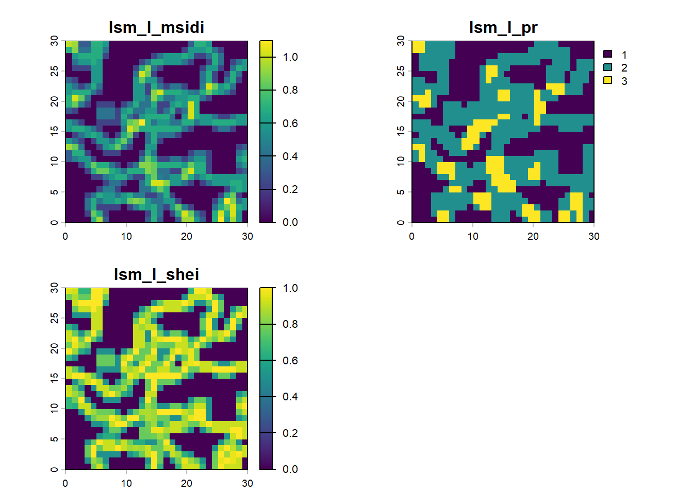
landcover <- rast(system.file("raster/landcover2015.tif", package = "motif"))
landcover_old <- rast(system.file("raster/landcover2001.tif", package = "motif"))
extent <- ext(c(xmin = 600000, xmax = 800000, ymin = -1100000, ymax = -800000))
land_new <- crop(landcover, extent)
land_old <- crop(landcover_old, extent)win <- matrix(1, nrow = 5, ncol = 5)
# relative mutual information (relmutinf) metric, which quantifies the clumpiness of the landscape – the larger the value, the more clumped the landscape is
new <- window_lsm(test, window = win, what = "lsm_l_relmutinf")
old <- window_lsm(test_old, window = win, what = "lsm_l_relmutinf")
diffs <- old[[1]][[1]] - new[[1]][[1]]
# Areas where the clumpiness of the landscape has increased (positive values) and decreased (negative values)
plot(diffs)3.8 Motif
library(motif)
library(sf)Linking to GEOS 3.14.1, GDAL 3.12.1, PROJ 9.7.1; sf_use_s2() is TRUElandcover_comp <- lsp_signature(landcover, type = "composition", threshold = 1, normalization = "none")Registered S3 method overwritten by 'stars':
method from
st_interpolate_aw.stars sf landcover_comp# A tibble: 1 × 3
id na_prop signature
* <int> <dbl> <list>
1 1 0.666 <int [1 × 7]>landcover_comp$signature[[1]]
1 2 3 5 6 7 9
[1,] 862001 8122776 84482 4311 2677 78555 203444landcover_coma <- lsp_signature(landcover, type = "coma", window = 200)
landcover_coma# A tibble: 298 × 3
id na_prop signature
* <int> <dbl> <list>
1 2 0.644 <int [7 × 7]>
2 3 0.0992 <int [7 × 7]>
3 4 0.145 <int [7 × 7]>
4 5 0.602 <int [7 × 7]>
5 6 0.775 <int [7 × 7]>
6 9 0.796 <int [7 × 7]>
7 38 0.255 <int [7 × 7]>
8 39 0 <int [7 × 7]>
9 40 0 <int [7 × 7]>
10 41 0 <int [7 × 7]>
# ℹ 288 more rows# Plot, hide code
stars200 <- lsp_add_sf(landcover, window = 200)
plot(landcover)
plot(st_geometry(stars200), add = TRUE)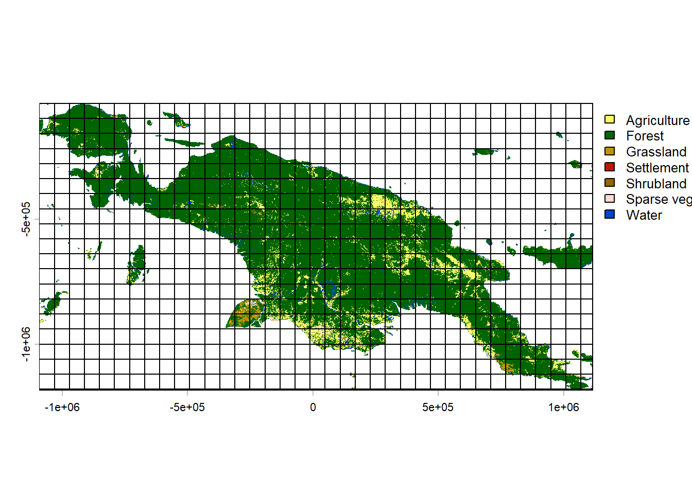
# Search similar
extent <- ext(c(xmin = 238000, xmax = 268000, ymin = -819814, ymax = -789814))
landcover_cropped <- crop(landcover, extent)
plot(landcover_cropped)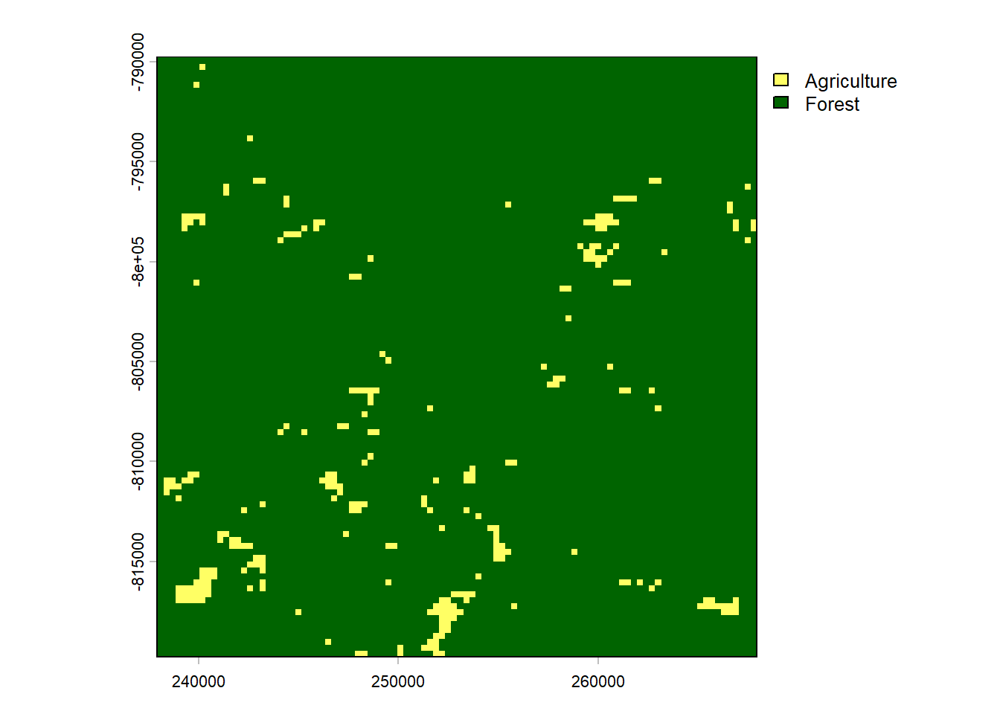
search_1 <- lsp_search(landcover_cropped, landcover, type = "cove", dist_fun = "jensen-shannon", window = 100, threshold = 1)
search_1stars object with 2 dimensions and 3 attributes
attribute(s):
Min. 1st Qu. Median Mean 3rd Qu. Max.
id 1.0000000000 722.25000000 1443.5 1443.5000000 2164.75 2886
na_prop 0.0000000000 0.00220000 1.0 0.6757365 1.00 1
dist 0.0001860036 0.05381626 0.5 0.3352441 0.50 1
dimension(s):
from to offset delta refsys x/y
x 1 74 -1091676 30000 unnamed [x]
y 1 39 -38556 -30000 unnamed [y]plot(search_1["dist"], breaks = c(0, 0.001, 0.01, 0.1, 1.01))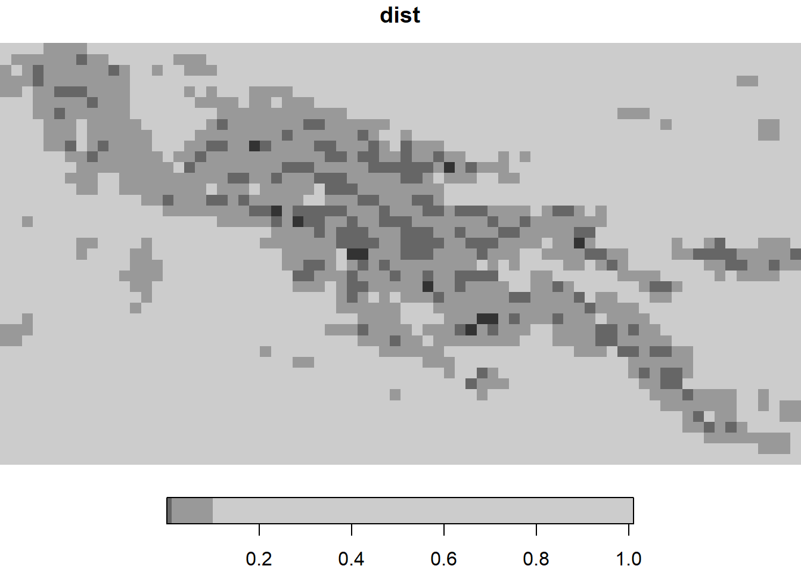
search_1$id[which(search_1$dist < 0.001)] [1] 690 856 1136 1212 1386 1439 1440 1668 1895 1896 1968search_1_690 <- lsp_extract(landcover, window = 100, id = 690)
plot(search_1_690)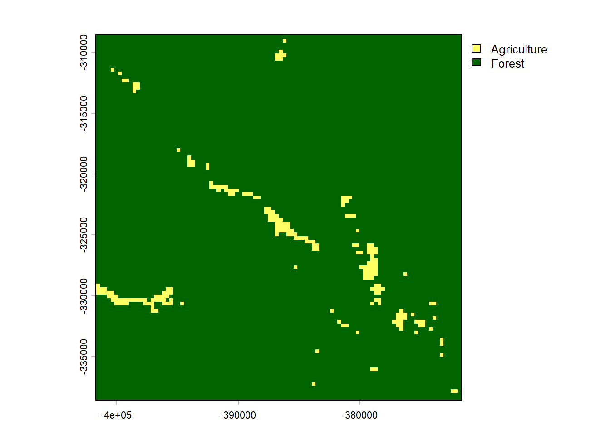
# Compare (find areas with the largest changes of land cover spatial patterns)
compare_1 <- lsp_compare(landcover, landcover_old, type = "cove", dist_fun = "jensen-shannon", window = 100, threshold = 0.9)
plot(compare_1["dist"],breaks=c(0, 0.001, 0.01, 0.1, 1.01))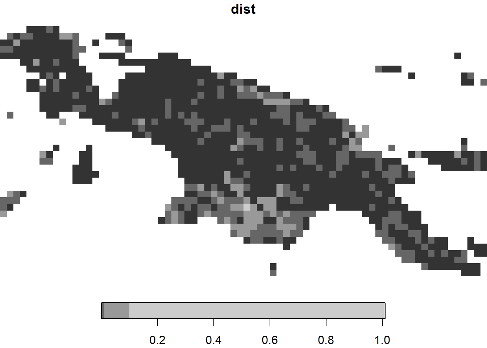
compare_1_max = max(compare_1$dist, na.rm = TRUE)
unique(compare_1$id[which(compare_1$dist == compare_1_max)])[1] 2036compare_1_2036 = lsp_extract(c(landcover_old, landcover), window = 100, id = 2036)
plot(compare_1_2036[[1]], main = "2001")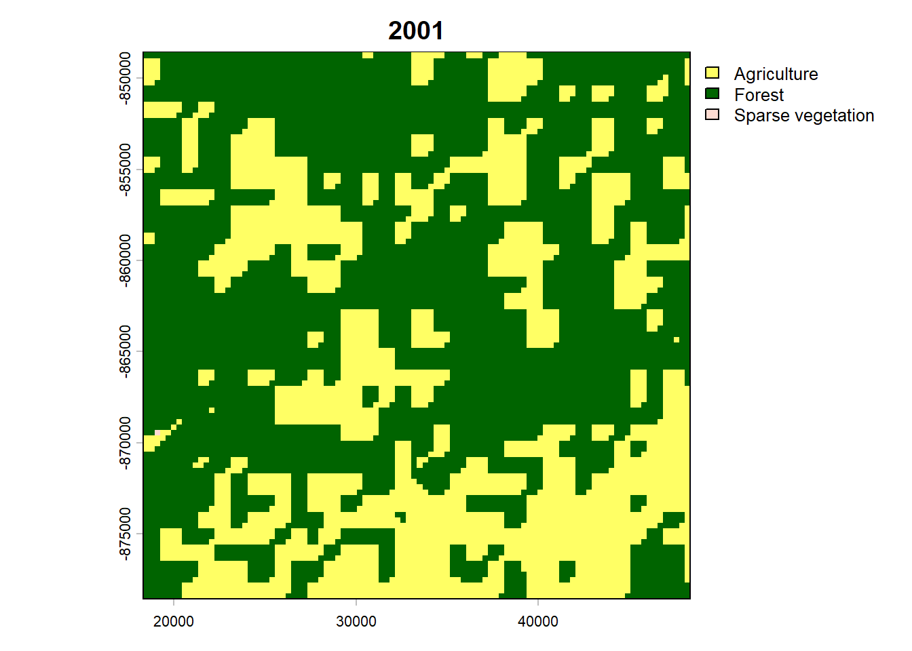
plot(compare_1_2036[[2]], main = "2015")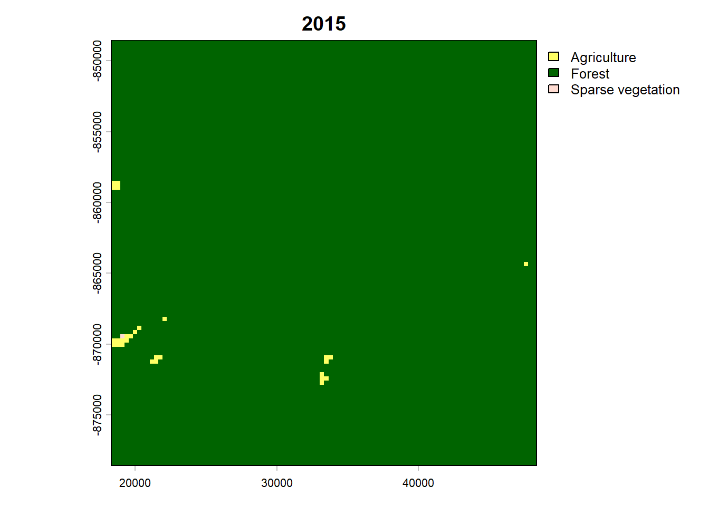
One of the reason to start landscapemetrics was also to have a collection of metrics that are not included in FRAGSTATS. This vignette will highlight them and provide references for further reading on them. Information-theoretical framework can be applied to derive four metrics of landscape complexity: Marginal entropy [H(x)], Conditional entropy [H(y|x)], Joint entropy [H(x, y)], and Mutual information [I(y,x)]. https://r-spatialecology.github.io/landscapemetrics/articles/new_metrics.html
sample_lsm: percentage_inside: the size of the actual sampled landscape in %. It is not always 100% due to two reasons: (i) clipping raster cells using a buffer not directly intersecting a raster cell center lead to inaccuracies and (ii) sample plots can exceed the landscape boundary.